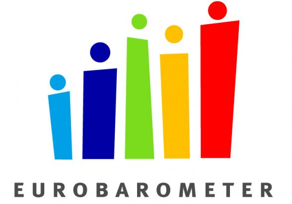
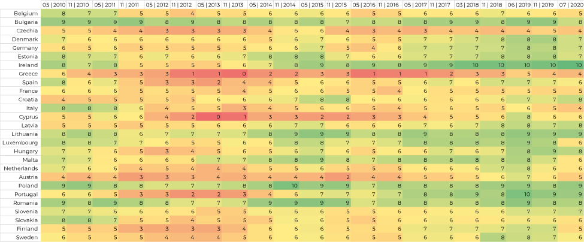

HOW THE EU SEES ITSELF
Even though from the outside the EU may still seem strong and unified, there has been an ongoing skepticism towards the EU among many citizens, with the Brexit only being one consequence of it. This website shows the development of the public opinion on the EU over the last 10 years and allows for a comparison across its different member countries.
DATASET AND RELEVANCE

The Standard Eurobarometer is provided by the European Commision.
The dataset used is the Standard Eurobarometer, a survey about the opinion of citizens on EU politics. Twice a year, around 1000 people are interviewed with a catalogue of around 200 questions. The survey started in in 1974. From the various questions, the most general one was chosen to summarize the topic:
In general, does the EU conjure up for you a very positive, fairly positive, neutral, fairly negative or very negative image?
The poll results are separated by country. To enable a comparison between the results of different years, the timeframe was set from 2010 to 2020. For simplification, only the combined positive, combined negative, neutral and undecided votes were considered. The results were then converted to a scale from 1 to 10, with higher numbers meaning better results. This allows for an easier comparison in the set timeframe and between countries. The modified dataset can be downloaded
here.

The calculated values from the poll results show the change of opinion on the EU.
METAPHOR
As the Eurobarometer is about the image the Europeans have on the EU, a mirror serves as the metaphor to show that these poll results are the self-image of the EU. The viewer will be able to see his webcam image as through a mirror reflection, underlining that each individual makes a part of the EU.
Cracks in the mirror glass illustrate the fragility of the EU as an institution. The more negative the results are from a given country, the more the cracks will increase and the more distorted the image will be. Because they are being drawn from the calculated numbers of the dataset, there are 10 stages of gravity of the cracks.
ARGUMENT AND INTENTION
The datasets show clearly that the European public is divided. A considerable amount of people has a neutral or negative image of the EU, which has many reasons that also vary between the member countries.
Blue Mirror wants to portray the EU as an important, yet imperfect institution that should concern each of its citizens, but which is threatened by a variety of influences that makes many people lose trust in it.
INTENDED MEANING
The broken mirror as a metaphor is intended to give a sense of urgency to the topic. The EU is portrayed as a fragile institution that must be protected, but also worked on in order to improve its image among the citizens.
The decision of showing the user‘s webcam image as the mirror reflection was made in order to give a sense of being connected to any country‘s poll results, as every country is part of the union and every citizen‘s opinion is important to its health.